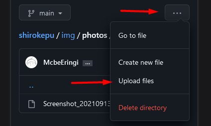
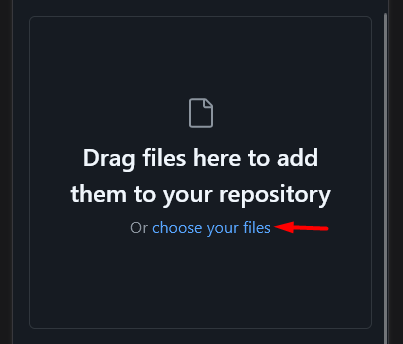

入力欄
番号:
日付:
タグ:
発言内容:
説明:(HTML要素使用可能)
画像:
document.getElementById("max").textContent=(Math.max(...x["data"].map((p) => p.no))+1)
発言者:

結果
入力例
"data":[ //←ここにカーソル合わせて貼り付け
{"no":nnn, "member":0~3, "date":yymmdd, "tag":[0~3], "data":"XXX", "desc":"XXX"}, //先頭行
{"no":nnn, "member":0~3, "date":yymmdd, "tag":[0~3], "data":"XXX", "desc":"XXX"},
{"no":nnn, "member":0~3, "date":yymmdd, "tag":[0~3], "data":"XXX"}, //desc(説明)はなくてもよい
//...
使いそうなHTML要素
改行 : <br> 画像 : <img src="[ファイル名]" width=[幅(200くらい)]> 段落 : <p>文字</p> 太字 : <b>文字</b>取消: <strike>文字</strike> 斜体 : <i>文字</i> 下線 : <u>文字</u>
画像のアップロードについて


ここ押して画像を選択
選択できたら下のほうの緑のボタン[Commit changes]を押す
アップロード先